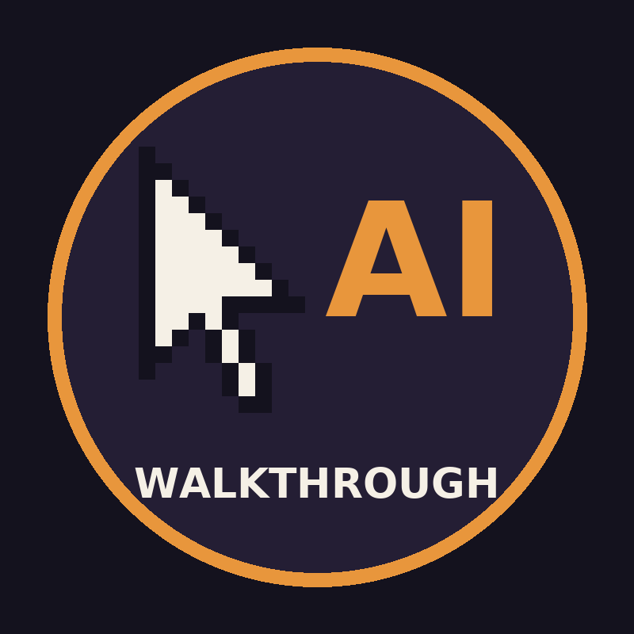

AI Walkthrough
Classic adventure games, played start to finish by a walkthrough player: the game does each action of the walkthrough by itself, the way a player would. The videos are published on the AI Walkthrough YouTube channel.
The players are open source: ScummVM with a walkthrough player and the Hollywood Monsters port.
"AI Walkthrough uploader" is the small tool that uploads these videos to that channel, and nothing else. Privacy policy · Terms